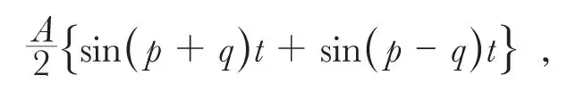

中文
中文A. Fleming
Editor’s Note
Ambrose Fleming here takes issue with a way of understanding wave communications, for telephone or television. In both technologies, devices encode signals as amplitude modulations of a carrier wave. In terms of Fourier analysis, one can view the resulting wave as occupying a “band” of frequencies around the carrier frequency, and it had become common to consider how these bands should be apportioned, which bands were allowed and so forth. But Fleming argues that talk of bands obscures the role of the amplitude. Too large an amplitude could cause interference between different transmissions, much as speaking too loudly at the theatre can be disruptive. Focusing on amplitude rather than bands, Fleming suggests, will help avoid unnecessary restrictions on the new technologies. 中文
IN scientific history we meet with many examples of scientific theories or explanations which have been widely adopted and employed, not because they can be proved to be true but because they provide a simple, easily grasped, plausible explanation of certain scientific phenomena. The majority of persons are not able to see their way through complicated phenomena and so thankfully adopt any short-cut to a supposed comprehension of them without objection. 中文
Ease of comprehension is not, however, a primary quality of Nature, and it does not follow that because we can imagine a mechanism capable of explaining some natural phenomenon it is therefore accomplished in that way. There is a widely diffused belief in a certain theory of wireless telephonic transmission, and also of television, that for securing good effects it is necessary to restrict or include operations within a certain width of “wave band”. But although this view has been very much adopted there is good reason to think that it is merely a kind of mathematical fiction and does not correspond to any reality in Nature. 中文
Let us consider how it has arisen. We send out from all wireless telephone transmitters an electromagnetic radiation of a certain definite and constant frequency expressed in kilocycles. Thus 2LO London broadcasts on 842 kilocycles. This means that it sends out 842,000 electric vibrations or waves per second. Every broadcasting station has allotted to it a certain frequency of oscillation and it is not allowed to depart from it. 中文
It is like a lighthouse which sends out rays of light of one pure colour or an organ which emits a single pure musical note. For most broadcasting stations this peculiar and individual frequency lies somewhere between a million and half a million per second, though for the long wave stations like Daventry it is so low as 193,000 or 193 kilocycles. 中文
When we speak or sing or cause music to affect the microphone at a broadcasting studio the result is to cause the emitted vibrations, which are called the carrier waves, to fluctuate in height or wave amplitude, but does not alter the number of waves sent out per second. It is like altering the height or size of the waves on the surface of the sea without altering the distance from crest to crest which is called the wave-length. 中文
Suppose the broadcasting station emits a carrier wave of frequency n and let p = 2πn. Then we may express the amplitude a of this wave at any time t by the function a = A sin pt where A is the maximum amplitude. If on this we impose a low frequency oscillation due to a musical note of frequency m and let 2πm = q, then we can express the modulated vibration by the function
a = A cos qt sin pt
But by a well-known trigonometrical theorem this is equal to

and thence may be supposed to be equivalent to the simultaneous emission of two carrier waves of frequency n + m and n – m. 中文
If the imposed note or acoustic vibration is very complex in form, then in virtue of Fourier’s theorem it may be resolved into the sum of a number of simple harmonic terms of form cos qt, and each of these may be considered to be equivalent to a pair of co-existent carrier waves. Hence the complex modulation of a single frequency carrier wave might be imitated by the emission of a whole spectrum or multitude of simultaneous carrier waves of frequencies ranging between the limits n + N and n – N, where n is the fundamental carrier frequency and N is the maximum acoustic frequency occurring and 2N is the width of the wave band. This, however, is a purely mathematical analysis, and this band of multiple frequencies does not exist, but only a carrier wave of one single frequency which is modulated in amplitude regularly or irregularly. 中文
If the sounds made to the microphone at the broadcasting station are very complex, such as those due to instrumental music or speech, then in virtue of this mathematical theorem the very irregular fluctuations in amplitude of the single carrier wave can be imitated if we suppose the station to send out simultaneously a vast number of carrier waves of various frequencies lying between certain limits called the “width of the wave band”. 中文
This, however, is merely a mathematical artifice similar to that employed when we resolve a single force or velocity in imagination into two or more component forces. Thus, if we consider a ball rolling down an inclined plane and desire to know how far it will roll in one second, we can resolve the single vertical gravitational force on the ball into two components, one along the plane and one perpendicular to it. But this is merely an ideal division for convenience of solution of the problem; the actual force is one single force acting vertically downwards. Similar reasoning is true with regard to wireless telephony. What happens, as a matter of fact, is that the carrier wave of one single constant frequency suffers a variation in amplitude according to a certain regular or irregular law. There are no multiple wave-lengths or wave bands at all. 中文
The receiver absorbs this radiation of fluctuating amplitude and causes the direct current through the loud speaker to vary in accordance with the fluctuations of amplitude of the carrier wave; the carrier wave vibrations being rectified by the detector valve. 中文
The same thing takes place in the case of wireless transmission in television. The scanning spot passes over the object and the reflected light falls on the photoelectric cells and creates in them a direct current which varies exactly in proportion to the intensity of the reflected light. This photoelectric current is employed to modulate the amplitude of a carrier wave, and the neon lamp at the receiving end translates back these variations of carrier wave amplitude into variations in the cathode light of the neon tube. 中文
There is neither in wireless telephony nor in television any question of various bands of wavelength. There is nothing but a carrier wave of one single frequency which experiences change of amplitude. The whole question at issue then is, what range in amplitude is admissible? 中文
In the case of television it is usual for critics of present achievements to say that good or satisfactory television cannot be achieved within the limits of the nine kilocycle band allowed. But there is in reality no wave band involved at all. It is merely a question of what change in amplitude in a given carrier wave can be permitted without creating a nuisance. 中文
It is something like the question: How loud can you whisper to your next neighbour at a concert or theatre without being considered to be a nuisance? People do whisper in this way, and provided not too loudly, it is passed over. But if anyone is so ill-mannered as to speak too loudly he is quickly called to order, or turned out. 中文
It is, however, not an easy thing to define a limit to wave amplitudes. They are measured in microvolts per metre and are difficult to measure. But a wave-length is easy to define in kilocycles or in metres, and hence the method has been adopted of limiting emission to an imaginary band of wavelengths which, however, do not exist. 中文
The definition is imperfect or elusive. It is something like the old-fashioned definition of metaphysics as “a blind man in a dark room groping for a black cat which isn’t there”. Similarly, the supposed wave band is not there. All that is there is a change, gradual or sudden, in the amplitude of the carrier wave. It is clear, then, that sooner or later we shall have to modify our code of wireless laws. 中文
We have no reason for limiting the output of our broadcasting stations to some imaginary wave band of a certain width, say nine kilocycles or whatever may be the limiting width, but we have reason for limiting the range of amplitude of the carrier waves sent out. 中文
Some easily applied method will have to be found of defining and measuring the maximum permissible amplitude of the carrier waves as affected by the microphone or other variational appliance. It may perhaps be thought that an unnecessary fuss is here being made on what may be regarded as simply a way of explaining things, but experience in other arts shows how invention may be greatly retarded by unessential official restrictions. Consider, for example, the manner in which mechanical traction was retarded in Great Britain for years by ridiculous regulations limiting the speed of such vehicles on highway roads. The only restrictions that should be imposed are those absolutely necessary in the interests of public safety or convenience, and all else tend to throttle and retard invention and progress. 中文
(125, 92-93; 1930)